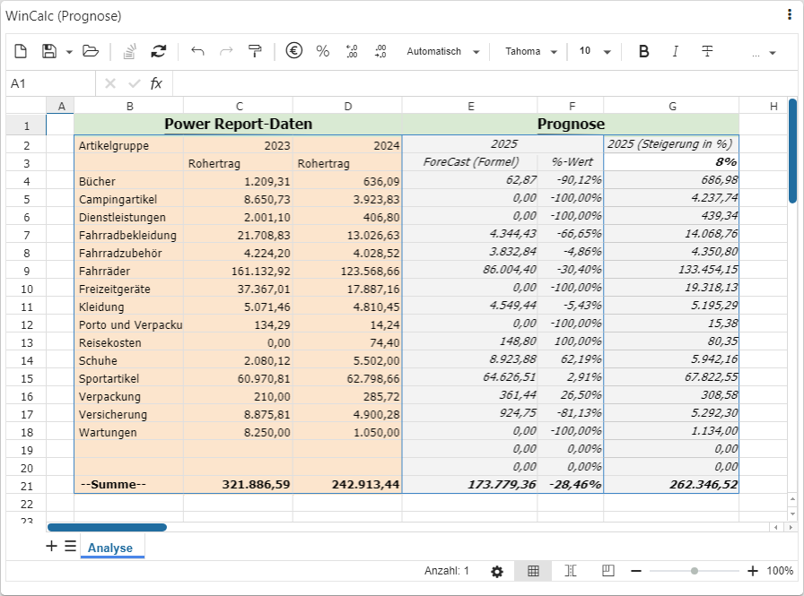
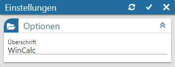

Power Report - Widgets - WinCalc

Das Übersicht stellt die alternative zu Microsoft Excel in WinLine dar und bietet u.a. die folgenden Funktionen:
ü Übersicht
Das Look & Feel des
WinCalc ist an Microsoft Excel angelehnt.
ü Formeln und Funktionen
Es stehen
neben allen üblichen Microsoft Excel Funktionen diverse weitere Funktionen zur
Verfügung, welche den Zugriff auf die Daten der WinLine ermöglichen.
ü Ordnerübersicht
Über eine
Ordnerstruktur kann ein individuelles Berechtigungssystem für die CalcSheets des
WinCalc geschaffen werden.
Die Besonderheit des WinCalc innerhalb des Power Reports liegt im Datenzugriff und der Interaktivität. Mit Hilfe der Funktion GETBIDATA kann auf fast alle Widgetdaten zugegriffen werden. Bei z.B. Nutzung eines Quickfilters erfolgt eine direkte Aktualisierung der Daten im CalcSheet.
Hinweis
WinCalc ist Bestandteil des WinLine BI CORPORATE. Sollte keine entsprechende Lizenz vorliegen, so ist ein Laden und Speichern von CalcSheets nicht möglich und der Ex- und Import steht generell nicht zur Verfügung. Des Weiteren kann pro Power Report-Vorlage 1 WinCalc eingefügt werden.
Einstellungen

Ø Überschrift
An dieser Stelle wird die Bezeichnung des WinCalc-Widgets definiert.
Buttons

Ø Aktualisierung
Mit Hilfe dieses Buttons werden die Einstellungen gespeichert, direkt angewendet und das Einstellungsfenster bleibt geöffnet.
Ø Ok
Durch Anwahl des Buttons "Ok" werden die Änderungen angewendet und das Fenster geschlossen.
Ø Ende
Durch Anwahl des Buttons "Ende" wird das Einstellungsfenster geschlossen und nicht gespeicherte Änderungen verworfen.